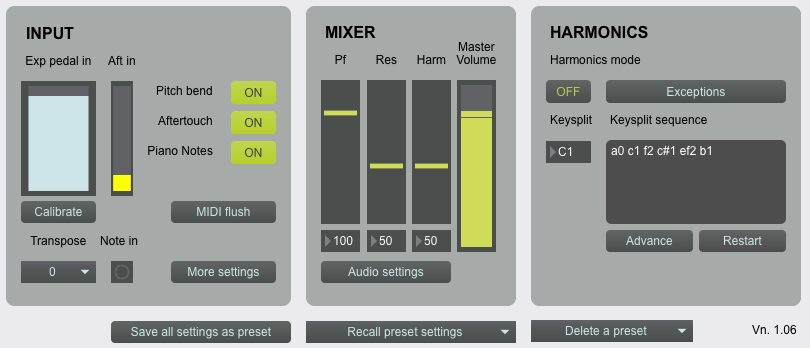
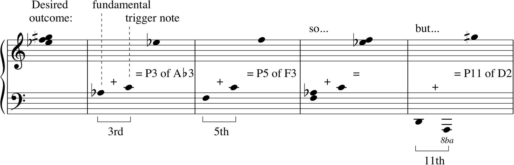

SoftMRP: a Software Emulation of the Magnetic Resonator Piano
Abstract
The Magnetic Resonator Piano (MRP) is a relatively well-established DMI which significantly expands the capabilities of the acoustic piano. This paper presents SoftMRP, a Max/MSP patch designed to emulate the physical MRP and thereby to allow rehearsal of MRP repertoire and performance techniques using any MIDI keyboard and expression pedal; it is hoped that the development of such a tool will encourage even more widespread adoption of the original instrument amongst composers and performers. This paper explains SoftMRP’s features and limitations, discussing the challenges of approximating responses which rely upon the MRP’s continuous sensing of key position, and considering ways in which the development of the emulation might feed back into the development of the original instrument, both specifically and more broadly: since it was designed by a composer, based on his experience of writing for the instrument, it offers the MRP’s designers an insight into how the instrument is conceptualised and understood by the musicians who use it.
Author Keywords
DMI, longevity, sustainability, performance skills, rehearsal, software emulation
CCS Concepts
•Applied computing → Sound and music computing; Performing arts
Introduction
The Magnetic Resonator Piano (MRP) is a DMI which significantly expands the capabilities of the acoustic piano [1][2]. Taking the form of a kit which may be installed in any grand piano, the MRP uses electromagnetic actuators to induce vibration in the strings, while leaving the conventional hammer action unaffected [3][4][5]. This allows the performer to achieve precise dynamic shaping of notes after the relevant keys have been depressed, and also (by means of changes in the frequency of the current passed through the actuators) to produce effects such as pitch bends and harmonics.
Since its creation in 2009, the MRP has been used regularly in performances and recording projects, and has built up a repertoire to which many composers have contributed1 ; it is now, in short, a relatively well-established instrument which has already demonstrated a degree of longevity.
One significant remaining obstacle to its even wider adoption, however, may lie in the fact that it can often be difficult for the pianist preparing for a performance on the MRP to access the instrument for the amount of rehearsal time they might ideally want. They must travel to wherever an instrument is currently set up: either the performance venue itself (assuming that it is possible for the installation to remain in place throughout the period leading up to the performance) or the MRP’s ‘home’ – the Centre for Digital Music at Queen Mary, University of London – where it occupies a studio which is usually in high demand from a variety of other users. Besides this, the pianist’s only other option is to work as best they can on whatever (unmodified) instrument they have at home.
The benefits of a software emulation of the MRP, then, are clear: as a practice tool, it could lessen the challenges (and reduce the time) involved in mounting a successful MRP recital, thus encouraging more performers to undertake to give such recitals more often. Emboldened by the increased likelihood of receiving well-prepared performances which satisfactorily realize their creative intentions, more composers might choose to write for it. Finally, in turn, better-prepared performances are more likely to serve as effective showcases for the instrument’s possibilities and encourage wider networks of performers and composers to explore them for themselves.
Context
The importance of ensuring the longevity of DMI’s and the compositions which employ them is widely understood and appreciated, as are the obstacles which may need to be overcome in order to do so [6][7][8][9][10][11]. Emulations have certainly played their part in this, usually when the technology used by specific composers in specific pieces has become obsolete or inaccessible [12][13][14][15][16]. The need for performers of DMI’s to learn and practise new kinds of skills is also well recognized [17][18].
At the same time, applications have been built which guide and assist the rehearsal of new performing techniques on traditional acoustic instruments [19][20], and which propose emulation as a means of practising acoustic instruments which may be difficult to access or transport [21]. As a digital emulation designed to facilitate skill acquisition and rehearsal of repertoire for a specific DMI, SoftMRP therefore draws together a number of existing strands in NIME-based and broader organological research.
Background
The physical MRP receives its input from two main sources: an optical scanner bar fitted to the piano keyboard, which continuously senses the height of each key, and a foot pedal. Typically, the pedal controls the overall volume level of the induced resonance, with key position being used to generate further dynamic variation within the range thus defined. Compositions for MRP may therefore require the performer to learn to co-ordinate unfamiliar combinations of movements involving both hands and both feet (if the sustain pedal is also used).
More specifically, performers may have to develop the ability to depress keys (perhaps quite quickly) without producing a sound, in order to allow notes to be faded up gradually, from nothing, using the pedal. Producing a pitch bend also requires a level of precise control over key position which is not involved in conventional piano playing: to slide between adjacent notes, the destination key must be slowly depressed while the first key is gradually released.
In all of these cases, it is obviously desirable not only to practise the physical movements involved (which would be possible on a conventional piano), but also, while doing so, to be able to hear at least a reasonably close approximation of the effect they will produce, accustomizing the performer to new relationships between action and outcome.
This is also important in aspects of MRP behavior which, although the performance techniques they involve are straightforward enough not to require any great amount of practice, nevertheless involve the generation of significantly augmented acoustic outputs. When the MRP is in harmonics mode, the white keys immediately above (or, depending on configuration, below) any depressed key will trigger successive overtones in the harmonic series of the corresponding pitch. Composers may choose to combine these tones with the conventional response of the hammer action, or, if the keys are depressed silently, to deploy them on their own. When playing full-spectrum resonance tones, meanwhile, the sound may be modulated by exerting further pressure on a key once it has been fully depressed: this makes possible a precisely-controllable vibrato effect. In all of these situations, the performer’s job in preparing for a performance is made considerably more difficult if they do not hear these outcomes when rehearsing.
SoftMRP responds to many of these needs. It also draws heavily upon my own experience of composing, and subsequently attending rehearsals of, a piece for MRP called l.v. in 2016-7: this requires the performer to be proficient in many of the techniques mentioned above. Indeed, the software grew from an initial basic emulation of the instrument’s harmonics mode, created in order to audition (and confirm the playability of) various microtonal chords, built up using some of the higher overtones of different fundamentals. This grounding of the software in my own experience of the instrument, and the refraction of the instrument’s capabilities and demands through the lens of one particular piece, have inevitably strongly influenced my decisions as to which MRP features SoftMRP seeks to emulate, and which it does not.
Description
Overview
SoftMRP is a Max/MSP patch which may be downloaded from http://www.jpitkin.co.uk/Tools_software.html. It is played with a MIDI keyboard, expression pedal and sustain pedal: standard equipment which is widely and inexpensively available, even to the less specialist musician. The sounds it is intended to simulate can be divided into three categories: the conventional, hammer-action response of the piano; full-spectrum tones produced by the induced resonance; and harmonics. Piano notes may be routed to another MIDI application, such as a DAW or a standalone virtual instrument; to a VST plug-in hosted within Max/MSP; or to the computer’s basic, built-in MIDI sound source (e.g. the Apple QuickTime synth). Full-spectrum resonance tones may also be routed in any of these ways, but may additionally be played using ‘SoftMRP Sounds’, a built-in set of samples of a basic synthesizer pad sound. A mixer allows the various sound sources the patch may employ to be balanced in a way which is felt to match the physical performance set-up.
Harmonics may only be produced internally, using a related set of samples. This is because of the difficulty involved in sending a third-party virtual instrument the precise combination of MIDI messages required to produce non-tempered pitches (particularly when these have to be sounded in combination with tempered chromatic tones, or other harmonics which require different degrees of tuning adjustment). For similar reasons, pitch bend functionality is only available when using SoftMRP Sounds: producing the effect with MIDI control data would become quite complex whenever one note had to be bent while another stayed where it was, for example. MIDI aftertouch, if it is supported by the keyboard being used, will modulate the full-spectrum resonance tones in SoftMRP Sounds in a way which imitates the physical MRP (both polyphonic and channel aftertouch are recognized); if another sound source is being used, the aftertouch control data can optionally be passed through to it, in order to allow the user to configure a similar response.
Special features
SoftMRP’s GUI (see Figure 1) is designed not to replicate the software element of the physical MRP - this is usually operated by an engineer – but rather to allow the performer easily to configure and switch between the various settings that may be required by the piece they are practising. This may be demonstrated by the way in which SoftMRP allows the user to set up ‘Exceptions’.


Figure 1: SoftMRP main window
As mentioned earlier, the basic harmonic response mode involves the white notes above (or, optionally, below) a held fundamental note triggering successive overtones of it. But it may sometimes be desirable for this pattern of response to be adjusted in some way: for example, because the physical stretch required in order to sustain the fundamental while also triggering the desired harmonic would otherwise exceed the performer’s reach.
Figure 2 shows an example of this from l.v.. If F3 and A♭3 are held down as fundamentals, playing C4 will trigger both of the lower two notes of the desired triad (C4 is a 5th above F3, and a 3rd above A♭3; F5 is P5 of F3, and E♭5 is P3 of A♭3). This can easily be played with the right hand. The upper note, however, is P11 of D2; if it were to be triggered below the fundamental (which is necessary to avoid a further overtones of F3 being triggered), the note required would be A1. This would create an interval (A1:D2) that is impossible for the left hand to encompass. A temporary reconfiguration must be put in place, then, to allow a closer note (for example C2) to trigger P11 of D2.


Figure 2: Microtonal chord from l.v. (m.185), with key combinations required to produce it
In the physical MRP set-up, a new patch would be programmed to accommodate this change, and then recalled via the command line when required. In SoftMRP, to simplify this process, and allow the performer to stand in for the engineer/operator in a practice situation, such rules or ‘Exceptions’ may be established by constructing logical statements using a series of number boxes and multiple-choice options (see Figure 3), somewhat in the style of Logic’s Transform window2. As many Exceptions as are required within a piece can be kept in memory, and activated or deactivated individually as required.

Figure 3: SoftMRP ‘Exceptions’ window (detail).
Similarly, the ‘Keysplit’ note, which, in harmonics mode, determines the pitch of fundamental at or above which partials are triggered by successively higher keys, and below which by successively lower ones, may need to be changed several times in the course of a single piece or movement. Again, on the physical MRP such changes need to be incorporated into a patch. In SoftMRP, however, a sequence of keysplit notes may be entered, stored, and then sequentially advanced through as required. Both keysplit sequences and sets of Exceptions are included when a Preset (a snapshot of all current SoftMRP settings) is saved.
Limitations
SoftMRP’s current limitations reflect the relative lack of sophistication of the sensors of a MIDI keyboard compared with the continuous optical sensing of the physical MRP. MIDI, of course, only records key position as ‘on’ or ‘off’: this makes gradual attacks or decays resulting from gradual depressions and releases impossible to emulate precisely. It also complicates any attempt to imitate the physical MRP’s other harmonics mode, in which rapid tremolos of partial depressions on a single note give rise to glissandos which sweep upwards through its overtones. Neither of these capabilities are emulated in SoftMRP3, and for similar reasons, its pitch bend programming is something of a compromise: when an adjacent key is pressed down at a velocity which falls below a preset threshold, the sustained pitch slides half of the way towards it; when the original key is then released, the glissando is completed.
SoftMRP also differs from its physical counterpart in another way: it offers a level of consistency of response and cleanness of timbre that the MRP, by its nature, cannot be relied upon to produce (it may well be that, for many who have used the instrument, this is part of its charm)4. Every grand piano will interact with the MRP’s sensors and actuators in a different way: different harmonics, for example, will sound more strongly or weakly above different fundamentals in different registers in a way that may be difficult to predict.
It was considered whether SoftMRP should attempt to simulate this element of unpredictability in some way (a little like how digital emulations of analogue synthesizers may be set to detune the pitches they produce by small, random amounts). However, this would raise the possibility of SoftMRP simulating, for example, a balancing problem in a chord of several harmonics which subsequently turned out not to be replicated in a performance on the physical instrument. Instead, allowances are made for the gradual weakening of the volume of harmonics which occur to some extent in every MRP installation towards the higher partials of each harmonic series, and where fundamentals are towards the higher registers; in other respects, SoftMRP responds like a rather utopian, ‘ideal conditions’ installation of the physical MRP.
Discussion
It was originally intended that, by the time of writing this paper, it would have been possible to evaluate SoftMRP by making it available to several pianists who have performed on the physical MRP, and seeking their opinions on how closely the experience of playing the two versions of the instrument matched one another, as well as how useful they felt SoftMRP would be as a practice tool overall. However, delays relating to changes in circumstance brought on by the current pandemic have meant that this process remains ongoing. It has nevertheless been invaluable to have the assistance of one such performer, Feifei Zhang, in testing the portability of the software from one system to another.
It is likely that with each different piece SoftMRP is used to rehearse, more additional effects or configurations will be revealed as being desirable to emulate, thus directing further refinement or expansion of the software’s capabilities. It will also be valuable to have more opinions on how closely SoftMRP’s built-in sounds match different performer’s senses of how the physical MRP actually sounds - and how much this matters in a tool intended for practice rather than performance.
It might also be interesting to consider whether ongoing use of SoftMRP might even influence future development of the physical MRP. If performers become used to the idea of setting up different configurations using Exceptions and Keysplit sequences, for example, rather than relying on an engineer to save and recall patches from the command line, might it make sense to explore the possibility of giving them the option to interact with the physical instrument in the same way (in other words, to emulate the emulation)5 [22]?
Questions such as these serve as reminders of the broader importance of asking what (and who) emulations are for, what aspects or features of the original it is therefore more or less important for them to emulate, and what limits there might be to the extent to which it is possible for them to do so6.
One distinctive feature of this particular emulation, of course, is that it has been built by someone other than the designer of the original instrument. This has potential disadvantages: I have no background in electrical engineering, and therefore only a very incomplete understanding of how the physical MRP is constructed, and how it actually works. As a result, what I have built might more accurately be described as an emulation of my own conception of the instrument, based to a large extent on my own recollections of how it sounds and responds, and even on what it reminds me of (variously: an organ, an ondes Martenot, a ‘warm pad’ synthesizer preset, the ‘fizz’ of polyphonic aftertouch mapped to cutoff frequency).
All of this, however, gives the designer of the original instrument a potentially interesting insight into how (and to what extent) it is understood by those who use it, in much the same way as it can be valuable for any DMI designer, as Oliver Hödl points out [23], to have other musicians compose for their instrument because of the inevitably unforeseen ways in which they will approach and seek to deploy it7. It is in these kinds of ways that I hope SoftMRP might be seen as an example of how an emulation might not only serve as a useful substitute for the instrument on which it is based, but also help to accelerate its development into an ever-more established, and no longer quite so New, IME.
Compliance with Ethical Standards
No third-party funding was received to support either the writing of this paper or the development of the project it describes.
Footnotes
See http://instrumentslab.org/research/mrp.html for details.
↩- ↩
When SoftMRP is used to rehearse l.v. these shortcomings are not actually of great importance: all the dynamic shaping is achieved with the pedal, and the harmonic glissando effect is not used.
↩l.v. in fact calls at one point for a “noisy glissando” between two chords, inviting the performer to embrace the possibility of various metallic-sounding artefacts arising from their attempt to make the MRP bend several notes at once.
↩It is interesting to note that Tom et al, in the paper cited above, raise the possibility that an emulation (in this case a rebuilding of an existing DMI) might identify ways in which the original might actually be improved.
↩See Bonardi & Barthelemy (op.cit.) for a discussion of whether performance-oriented emulations can really be said to achieve the same results as the technology they are designed to stand in for.
↩Both McPherson & Kim (2012) and Hödl observe that it is more common for the designers of DMI’s also to be the people who perform upon and compose for them (at least initially).
↩
Citations
- ↩McPherson, A. (2010). The Magnetic Resonator Piano: Electronic Augmentation of an Acoustic Grand Piano. Journal of New Music Research, 39(3), 189–202. https://doi.org/10.1080/09298211003695587
- ↩McPherson, A., & Kim, Y. (2010). Augmenting the Acoustic Piano with Electromagnetic String Actuation and Continuous Key Position Sensing. In Proceedings of the International Conference on New Interfaces for Musical Expression (pp. 217–222). Sydney, Australia. https://doi.org/10.5281/zenodo.1177849
- ↩McPherson, A. P., & Kim, Y. E. (2011). Multidimensional Gesture Sensing at the Piano Keyboard. In Proceedings of the SIGCHI Conference on Human Factors in Computing Systems (pp. 2789–2798). Vancouver, BC, Canada: Association for Computing Machinery. https://doi.org/10.1145/1978942.1979355
- ↩McPherson, A. (2012). Techniques and Circuits for Electromagnetic Instrument Actuation. In Proceedings of the International Conference on New Interfaces for Musical Expression. Zenodo. https://doi.org/10.5281/zenodo.1180533
- ↩McPherson, A. (2013). Portable Measurement and Mapping of Continuous Piano Gesture. In Proceedings of the International Conference on New Interfaces for Musical Expression (pp. 152–157). Daejeon, Republic of Korea: Graduate School of Culture Technology, KAIST. https://doi.org/10.5281/zenodo.1178610
- ↩Berdahl, E., & Chafe, C. (2011). Autonomous New Media Artefacts ( AutoNMA ). In Proceedings of the International Conference on New Interfaces for Musical Expression (pp. 322–323). Oslo, Norway. https://doi.org/10.5281/zenodo.1177953
- ↩McPherson, A., & Kim, Y. (2012). The Problem of the Second Performer: Building a Community Around an Augmented Piano. Computer Music Journal, 36(4), 10–27. https://doi.org/10.1162/COMJ_a_00149
- ↩Freed, A., MacCallum, J., & Mansfield, S. (2013). “Old” is the New “New”: a Fingerboard Case Study in Recrudescence as a NIME Development Strategy. In Proceedings of the International Conference on New Interfaces for Musical Expression (pp. 441–445). Zenodo. https://doi.org/10.5281/zenodo.1178524
- ↩Baguyos, J. C. (2014). Contemporary Practices in the Performance and Sustainability of Computer Music Repertoire. In Music Technology meets Philosophy - From Digital Echos to Virtual Ethos: Joint Proceedings of the 40th International Computer Music Conference, ICMC 2014, and the 11th Sound and Music Computing Conference, SMC 2014, Athens, Greece, September 14-20, 2014. Michigan Publishing. Retrieved from http://hdl.handle.net/2027/spo.bbp2372.2014.017
- ↩Morreale, F., & McPherson, A. (2017). Design for Longevity: Ongoing Use of Instruments from NIME 2010-14. In Proceedings of the International Conference on New Interfaces for Musical Expression (pp. 192–197). Copenhagen, Denmark: Aalborg University Copenhagen. https://doi.org/10.5281/zenodo.1176218
- ↩Marquez-Borbon, A., & Martinez-Avila, J. P. (2018). The Problem of DMI Adoption and Longevity: Envisioning a NIME Performance Pedagogy. In T. M. Luke Dahl Douglas Bowman (Ed.), Proceedings of the International Conference on New Interfaces for Musical Expression (pp. 190–195). Blacksburg, Virginia, USA: Virginia Tech. https://doi.org/10.5281/zenodo.1302541
- ↩Arfib, D., & Dudon, J. (1999). A Digital Version of the Photosonic Instrument. In Proceedings of the 1999 International Computer Music Conference, ICMC 1999, Beijing, China, October 22-27, 1999. Michigan Publishing. Retrieved from http://hdl.handle.net/2027/spo.bbp2372.1999.399
- ↩Arfib, D., & Dudon, J. (2002). A Digital Emulator of the Photosonic Instrument. In Proceedings of the International Conference on New Interfaces for Musical Expression (pp. 1–4). Dublin, Ireland. https://doi.org/10.5281/zenodo.1176388
- ↩Bullock, J., & Coccioli, L. (2005). Modernising Live Electronics Technology in the Works of Jonathan Harvey. In Proceedings of the 2005 International Computer Music Conference, ICMC 2005, Barcelona, Spain, September 4-10, 2005. Michigan Publishing. Retrieved from http://hdl.handle.net/2027/spo.bbp2372.2005.041
- ↩Bonardi, A., & Barthélemy, J. (2008). The Preservation, Emulation, Migration, and Virtualization of Live Electronics for Performing Arts: An Overview of Musical and Technical Issues. Journal on Computing and Cultural Heritage, 1(1). https://doi.org/10.1145/1367080.1367086
- ↩Najnudel, J., Helie, T., Roze, D., & Boutin, H. (2020). Simulation of an Ondes Martenot Circuit. IEEE/ACM Transactions on Audio, Speech, and Language Processing, 28, 2651–2660. https://doi.org/10.1109/taslp.2020.3019643
- ↩Oore, S. (2005). Learning Advanced Skills on New Instruments. In Proceedings of the International Conference on New Interfaces for Musical Expression (pp. 60–64). Vancouver, BC, Canada. https://doi.org/10.5281/zenodo.1176794
- ↩Butler, J. (2008). Creating Pedagogical Etudes for Interactive Instruments. In Proceedings of the International Conference on New Interfaces for Musical Expression (pp. 77–80). Genoa, Italy. https://doi.org/10.5281/zenodo.1179503
- ↩Bailey, N. J., McGilvray, D., Hair, G., Pearson, I., Morrison, A., & Parncutt, R. (2008). The Rosegarden Codicil: Rehearsing Music in Nineteen-Tone Equal Temperament. In Proceedings of the 2008 International Computer Music Conference, ICMC 2008, Belfast, Ireland, August 24-29, 2008. Michigan Publishing. Retrieved from http://hdl.handle.net/2027/spo.bbp2372.2008.089
Hair, G., Bailey, N. J., & Swayne, L. (2009). Taking Microtonal Composition and Performance from the Periphery into the Mainstream. In Proceedings of the International Symposium on Performance Science 2009. Utrecht, the Netherlands: Association Européenne des Conservatoires, Académies de Musique et Musikhochschulen (AEC).
↩- ↩Wiriadjaja, A. (2013). Gamelan Sampul: Laptop Sleeve Gamelan. In Proceedings of the International Conference on New Interfaces for Musical Expression (pp. 469–470). Daejeon, Republic of Korea: Graduate School of Culture Technology, KAIST. https://doi.org/10.5281/zenodo.1178688
- ↩Tom, A. J., Venkatesan, H. J., Franco, I., & Wanderley, M. (2019). Rebuilding and Reinterpreting a Digital Musical Instrument — The Sponge. In M. Queiroz & A. X. Sedó (Eds.), Proceedings of the International Conference on New Interfaces for Musical Expression (pp. 37–42). Porto Alegre, Brazil: UFRGS. https://doi.org/10.5281/zenodo.3672858
- ↩Hödl, O. (2019). “Blending Dimensions” when Composing for DMI and Symphonic Orchestra. In M. Queiroz & A. X. Sedó (Eds.), Proceedings of the International Conference on New Interfaces for Musical Expression (pp. 198–203). Porto Alegre, Brazil: UFRGS. https://doi.org/10.5281/zenodo.3672922